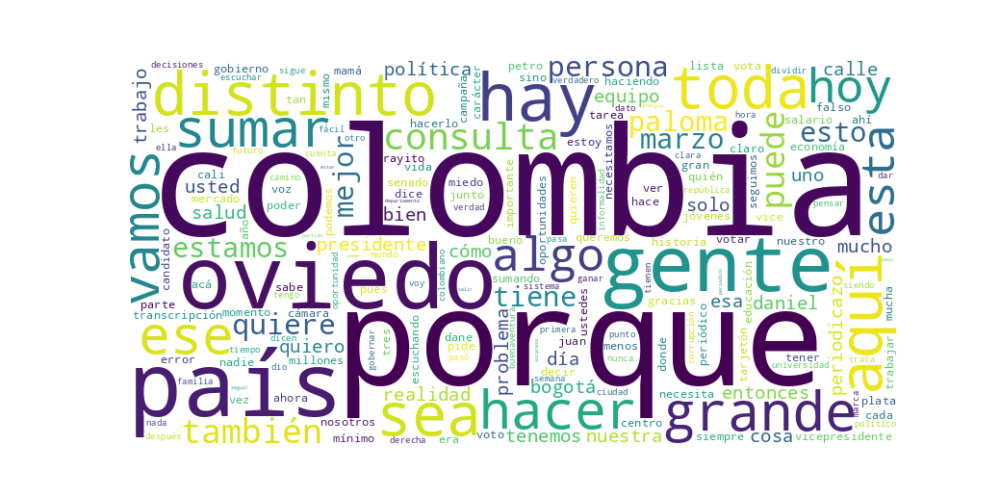

Seguidores: 691,425
Fecha de Análisis: Corpus completo de publicaciones en Instagram (período pre-electoral y posterior a consultas). Candidato: Juan Daniel Oviedo (candidato presidencial/vicepresidencial).
El candidato emplea un estilo de comunicación cercano, personal y altamente narrativo, que combina elementos de informalidad conversacional con un trasfondo técnico derivado de su formación como economista y exdirector del DANE. Su discurso es íntimo y testimonial, basado en anécdotas de su vida (accidente en la infancia, experiencia en el DANE, historia familiar) para humanizar su figura y construir credibilidad. Utiliza un lenguaje accesible pero preciso, evitando tecnicismos complejos y explicando conceptos económicos o sociales con analogías cotidianas (“el man de los datos”, “hacer la tarea”). Aunque aborda temas técnicos, lo hace desde una perspectiva pedagógica y emocional, buscando conectar con el ciudadano promedio.
El tono predominante es propositivo, esperanzador y de confrontación moderada. Combina un optimismo resiliente (“Sí se puede”, “¿Por qué no?”) con una crítica serena pero firme hacia los extremos políticos y la improvisación gubernamental. Evita el tono agresivo o visceral, optando por una confrontación basada en datos y sentido común. Transmite confianza en sí mismo y en la gente, destacando su disposición al diálogo y al trabajo en equipo.
La estrategia de comunicación de Juan Daniel Oviedo se centra en construir una identidad de candidato técnico, auténtico y conciliador, que aprovecha su historial de gestión en el DANE y su biografía personal para diferenciarse de la clase política tradicional. Se dirige a un electorado cansado de la polarización, escéptico ante promesas populistas y con aprecio por la gestión basada en datos. Su discurso busca evocar confianza, esperanza pragmática y un sentido de inclusión, presentando su candidatura como un “riesgo sensato” frente a los extremos. En la fase como fórmula vicepresidencial con Paloma Valencia, acentúa el mensaje de complementariedad y suma de diferencias para ampliar su base electoral. En esencia, Oviedo apela a la racionalidad emocional: combina datos con relatos personales para persuadir a quienes buscan un cambio creíble y no radical.
REPORTE ESTRATÉGICO DE COMUNICACIÓN - CANDIDATO JUAN DANIEL OVIDEO
1. Resumen del Patrón de Éxito: El éxito de su comunicación reside en una fórmula poderosa que combina autenticidad vulnerable y pragmatismo sensato. Se construye no como un político tradicional, sino como un ciudadano ejemplar que proyecta sus cicatrices personales (literalmente y metafóricamente) como prueba de su comprensión de las heridas colectivas de Colombia. Su mensaje central es el del "hacedor sensato": una persona que hace "mucho con poco", que privilegia el "equipo" sobre la división, y que propone una política basada en datos y escucha, superando el tribalismo ideológico. La emoción predominante no es la rabia ni la euforia vacía, sino una esperanza trabajadora y resiliente, respaldada por una biografía de superación.
2. Tácticas de Comunicación Clave: * Narrativa de la Cicatriz y la Superación: Utiliza su historia personal (accidente facial, burlas, hipoacusia) como metáfora fundacional. Transforma una vulnerabilidad en un símbolo de fortaleza, credibilidad y conexión empática con un país "herido". No es un relato de victimismo, sino de resiliencia construida a través del estudio y el trabajo duro ("el estudio fue mi refugio", "hacer bien la tarea"). * Desplazamiento del Eje Ideológico (Ni-Ni): Define su posicionamiento por oposición a los extremos del espectro. Se presenta como la alternativa a "los populismos de izquierda o de derecha", al "prejuicio" y a la pelea "en los rines". Su enemigo no es un partido específico, sino la irracionalidad, la división y la falta de seriedad. Esto le permite atraer a un electorado cansado de la polarización. * Credenciales del "Técnico Ético": Combina dos narrativas de autoridad: 1) La del técnico independiente (exdirector del DANE que "responde con datos"), y 2) La del independiente financiero (hipotecó su casa para no deber favores). Esto construye una imagen de integridad, capacidad y autonomía frente a "los cárteles" del poder tradicional. * Reencuadre de la Realidad y Llamado al Realismo: Insiste en la necesidad de "asumir la realidad completa" del país. Rechaza tanto el negacionismo de los avances como el ocultamiento de los problemas. Este llamado a un diagnóstico sereno y basado en hechos se posiciona como un acto de valentía frente a los relatos parcializados de sus rivales.
3. Temas de Mayor Resonancia: * Contra la Corrupción y el "Cártel" en el Poder: La denuncia específica de escándalos (ej. el caso Angie Rodríguez en la Casa de Nariño) como síntoma de un sistema corrupto genera alta interacción al tocar una fibra sensible y universal. * Unidad Nacional y Trabajo en Equipo: El lema "hacer equipo en un país que no sabe hacer equipo" resuena profundamente. Presenta la unidad no como un cliché, sino como una tarea sensata y revolucionaria frente a la cultura de la división. * El Lugar de las Mujeres y los Orígenes: El video dedicado a las mujeres, anclado en el agradecimiento a su madre, conecta desde lo emocional y familiar, ampliando su base más allá del discurso técnico. * La Defensa de la Sensatez y el Esfuerzo Personal: La reivindicación del que "hace la tarea", del que "escucha", del que se "prepara", apela a un ethos meritocrático y de decencia común que busca un amplio reconocimiento transversal.
4. Perfil de la Audiencia Implícita: Le habla principalmente a un electorado cansado, pragmático y potencialmente indeciso. No se dirige a la base emocionalmente movilizada de un polo, sino a aquellos desencantados con la polarización ("ni petristas, ni uribistas"). Su lenguaje, que mezcla datos con anécdotas personales, apunta a un segmento con educación media/alta, que valora tanto la competencia como la autenticidad. También busca conectar con jóvenes que desconfían de la política tradicional pero admiran la resiliencia y la historia de superación personal.
5. Conclusión Estratégica: La potencia fundamental de su discurso radica en haber humanizado radicalmente la figura del técnico. Ha logrado fusionar dos arquetipos poderosos y usualmente separados: el Experto (crédito en la mente) y el Luchador (crédito en el corazón). No es solo un tecnócrata con gráficos, es un hombre con cicatrices que promete sanar las del país. No es solo un ciudadano indignado, es un profesional que ofrece soluciones sistemáticas. Su poder diferencial frente al discurso político tradicional es que ha convertido su biografía en su principal programa de gobierno y ha enmarcado la sensatez no como algo aburrido, sino como el acto más atrevido y transformador posible en el clima político actual. Ofrece una identidad política nueva: la del ciudadano-serio-que-llega-al-poder, en contraposición a la del político-profesional.

Caption: Estamos haciendo mucho… con poco. En un país que no sabe hacer equipo, estamos sumando. En un país donde dividir da likes, estamos haciendo atractiva la sensatez. Eso implica riesgos. Implica prejuicios. Pero avanzar como lo estamos haciendo, con humildad y escuchando, me confirma algo: Sí se puede hacerlo distinto. Y sí se puede hacerlo mejor. ⚡ #VotaPorOviedo
Likes: 20,373 | Comentarios: 570 | Reproducciones: 186,386
Ver en InstagramCaption: Hay algo que nos une a todos… Antes que de un político, antes que de un partido, todos venimos de una mujer. De una mujer que, en medio de su propia historia, apostó por la vida. Las que emprenden, cuidan, lideran, estudian y sostienen este país todos los días. Colombia no avanza sin las mujeres. Feliz #DíaInternacionalDeLaMujer a todas. ¡Y gracias mamá!
Likes: 41,585 | Comentarios: 821 | Reproducciones: 445,571
Ver en InstagramCaption: ¿Usted no sabe quién soy yo? Venga, le cuento. Crecí en Normandía, Engativá, cerca del aeropuerto. Mi papá era piloto y viajaba mucho. Mi abuelo Plutarco, carpintero, fue mi figura paterna. En 1982 tuve un accidente: me caí sobre una lata y me cosieron 72 puntos en la cara. Ese accidente cambió mi voz y afectó mi audición. Crecí escuchando burlas. Años después fui director del DANE y se volvieron a burlar… otra vez por mi voz. Y entendí algo: todos cargamos cicatrices. Hoy quiero unir muchas cicatrices para sanar muchas heridas en Colombia. Soy Juan Daniel Oviedo. ⚡#VotaPorOviedo
Likes: 22,679 | Comentarios: 969 | Reproducciones: 252,380
Ver en Instagram